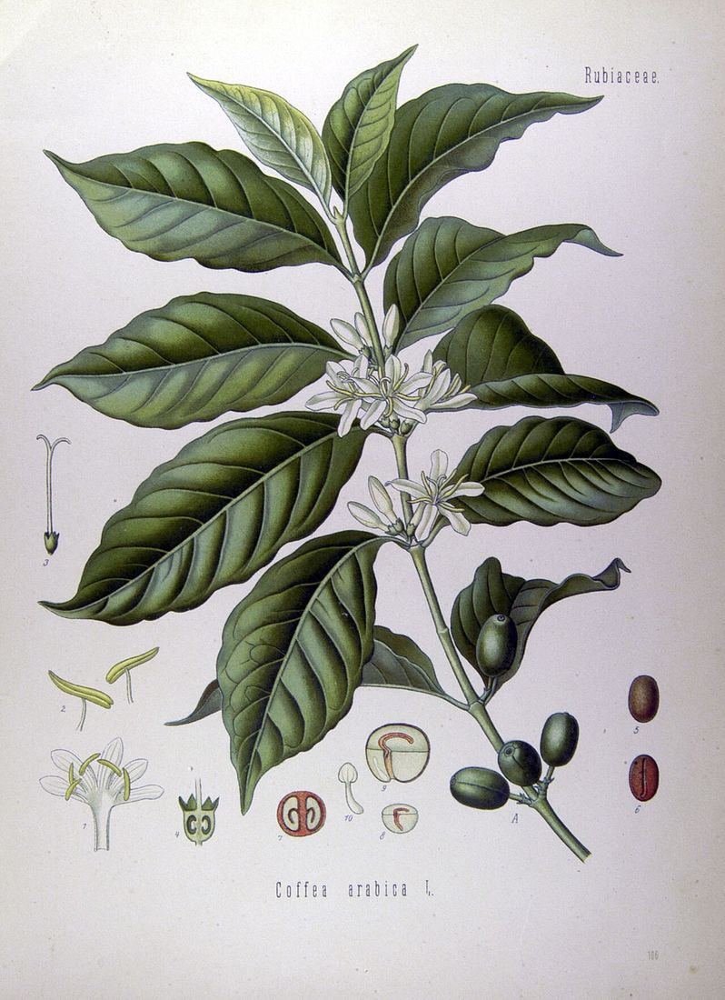
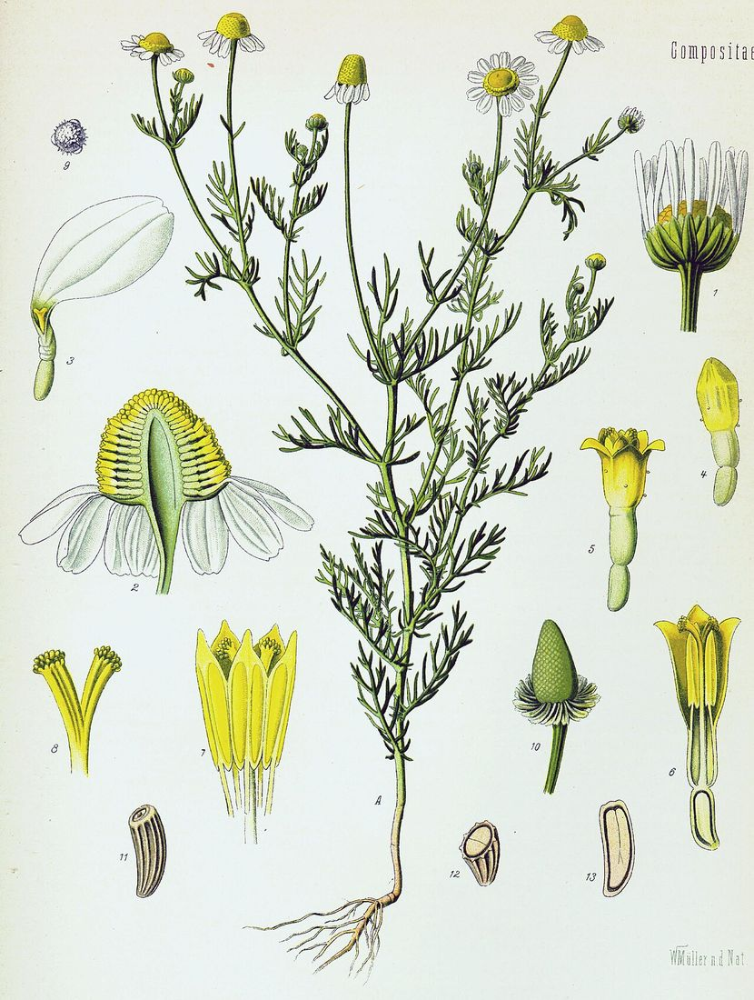
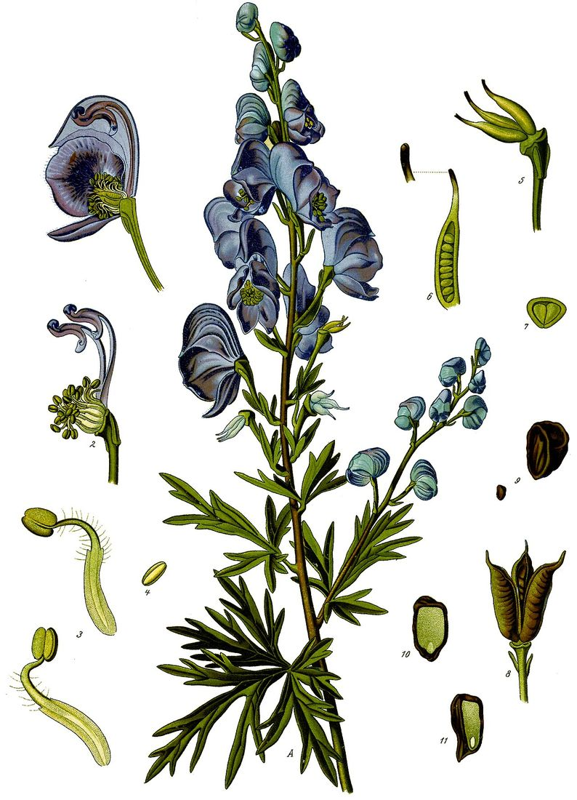
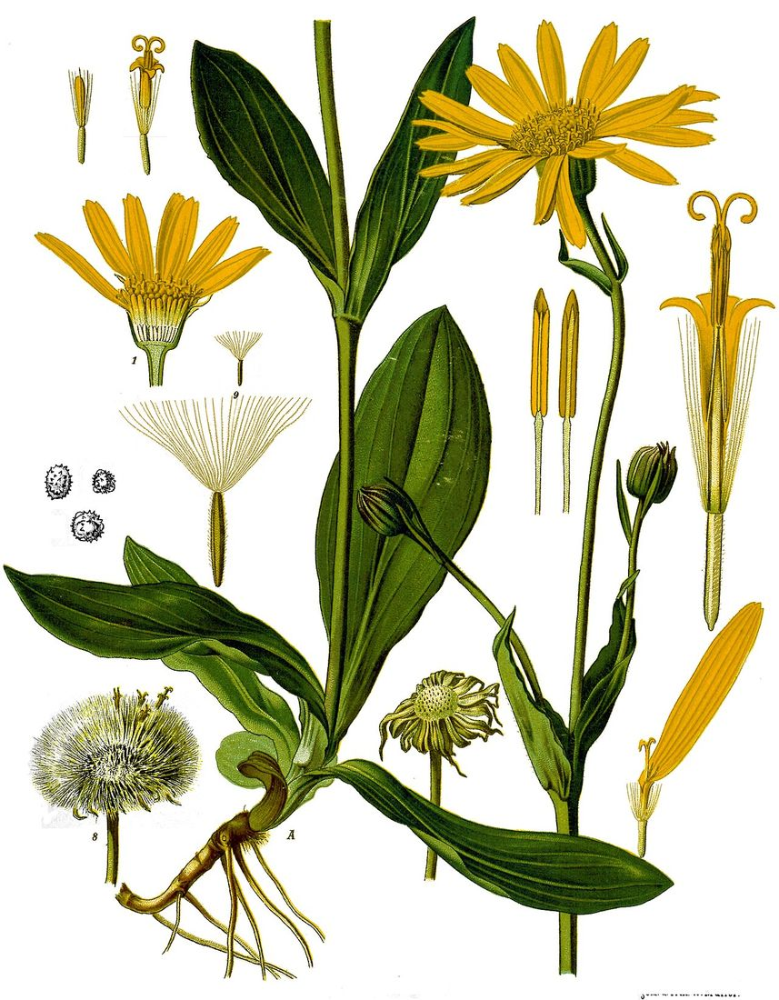
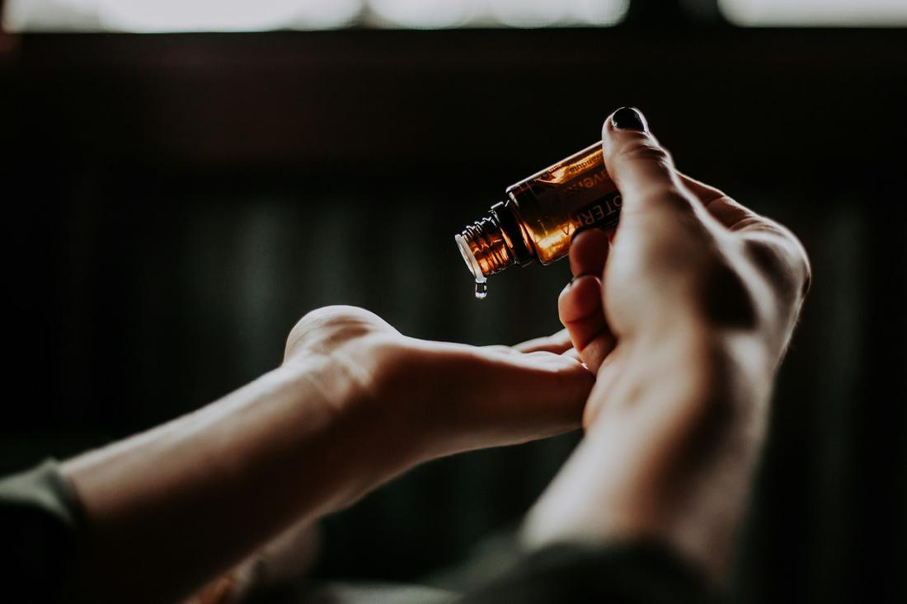

01
Like cures like
A substance that can cause symptoms in a healthy person is used, in tiny amounts, for similar symptoms in someone unwell. Coffee keeps us awake; homeopathic Coffea is used for a racing, sleepless mind.
Home / What is homeopathy?
Understanding homeopathy
Homeopathy has been practised for more than two hundred years and is used by millions of people around the world. Here is how it works, what to expect, and how it fits alongside your doctor’s care.

In a nutshell
Homeopathy is a holistic system of medicine developed in the 1790s by the German physician Samuel Hahnemann. It uses highly diluted remedies — made from plants, minerals and other natural sources — chosen to match the whole of a person’s symptoms.
Rather than treating physical, emotional and mental symptoms separately, a homeopath sees them as connected. The aim is to support the body’s own capacity to rebalance.
Remedies are usually taken as small pills or pillules, and sometimes as liquids or powders. When used appropriately under the guidance of a qualified homeopath, they rarely cause side effects and can be given to people of all ages.
The principles
A substance that can cause symptoms in a healthy person is used, in tiny amounts, for similar symptoms in someone unwell. Coffee keeps us awake; homeopathic Coffea is used for a racing, sleepless mind.

Two people with hay fever may need different remedies. A homeopath looks for what is particular to you — when it is worse, what eases it, how you feel in yourself.

Remedies are prepared by repeated dilution and shaking. The aim is the gentlest possible prompt, given no more often than needed.

Physical, emotional and mental symptoms are seen as connected facets of one picture — which is what makes homeopathy holistic.
Seeing a homeopath
Your first consultation lasts up to ninety minutes. I’ll ask about your health now, your history and your lifestyle — and about the unique way your symptoms affect you.
I match your symptoms with the most similar remedy and explain clearly how and how often to take it. Remedies come as pills, pillules, liquid or powder.
Follow-up appointments look at how you have responded and decide the next steps of your care together.

Safety first
Homeopathy is a complementary therapy — it works alongside conventional medicine, not instead of it. Homeopathic remedies do not interfere with prescribed medicines, and many of my clients use both.
Research & evidence
I came to homeopathy as a research scientist, so I take evidence seriously. Scientific opinion on homeopathy is divided: some trials report positive findings, many are inconclusive, and major reviews — including those relied on by the NHS — have concluded that there is not good-quality evidence that homeopathy is effective for specific health conditions. The NHS in England no longer funds it.
What I can promise is a careful, individual and caring approach, time to be properly heard, and honesty about what homeopathy can and cannot do. If you would like to read more, the British Homeopathic Association and the NHS both publish information — so you can make up your own mind.
From the materia medica
Many homeopathic remedies begin as plants that herbalists, apothecaries and botanists have known for centuries. Tap a plate to read its story.
These are descriptions from the traditional homeopathic literature, shared for interest — not advice. Remedies are chosen individually at a consultation.
Questions
No. Herbal medicine uses measurable amounts of plant material. Homeopathic remedies are prepared by repeated dilution and succussion (vigorous shaking), and are made from minerals and other sources as well as plants.
Remedies are highly diluted and rarely cause side effects when used under the guidance of a qualified homeopath. The main risk is using homeopathy instead of necessary medical care — which is why I always encourage you to keep your GP involved.
Yes. Homeopathy does not interfere with conventional medicine and the two can sit comfortably side by side.
Yes. Remedies are gentle and easy to give — small sweet pills, granules or liquids. A parent or carer is always present at children’s consultations.
Many women use homeopathy in pregnancy, always alongside the care of their midwife or doctor. Please mention that you are pregnant when you book.
Everyone is different. Short-term complaints may change quickly; long-standing ones usually unfold over weeks and months, which we review together at follow-ups.
You’ll be told which remedy to take, in what strength and how often. Remedies can be posted to you or bought from a homeopathic pharmacy.
Homeopathy is not regulated by law in the UK. Choosing a homeopath who belongs to a professional register — such as the Society of Homeopaths, of which Vinita is a registered member (RSHom) — means they follow a code of ethics and practice and hold professional insurance.
Your first step
Book a free 15-minute call. Tell Vinita a little about yourself, ask anything you like, and decide in your own time whether homeopathy is for you.